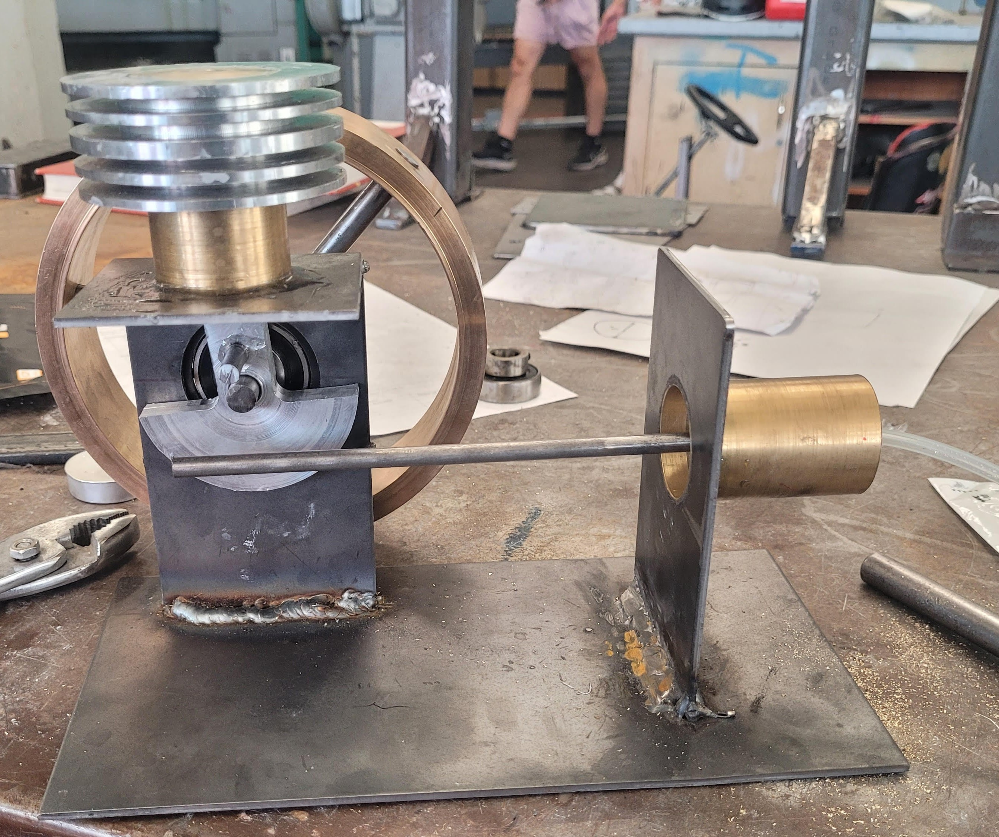
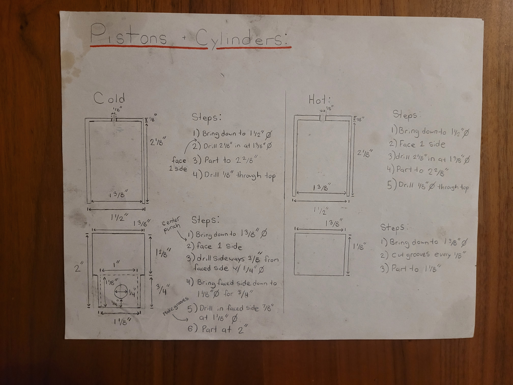
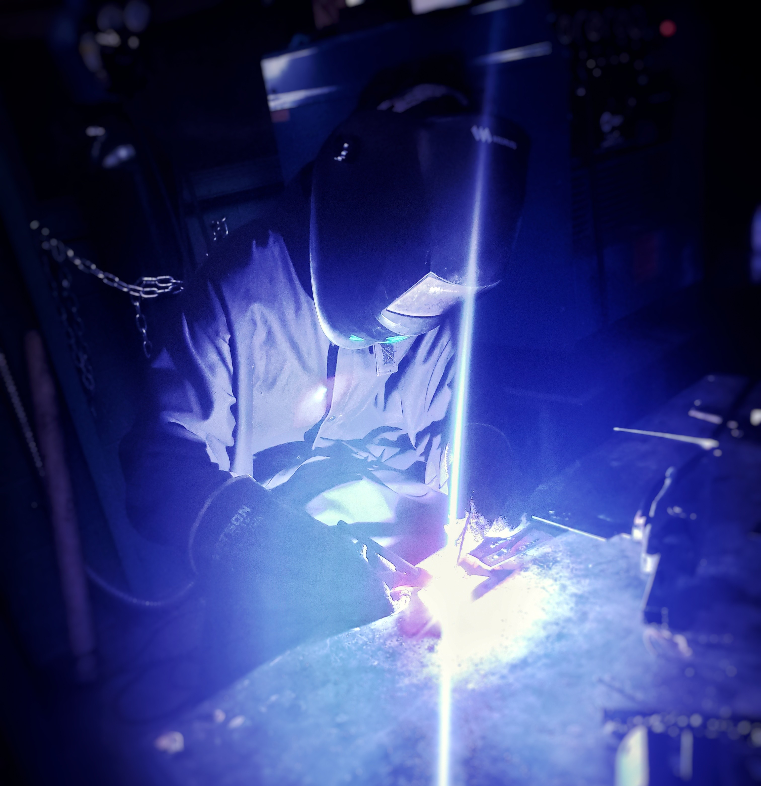

February 2024
Stirling Engine
Manual Machining, Welding, Drafting, Thermodynamics.

Overview
What this project was about.
This was my first ever "engineering project" I ever worked in. I made this project as part of my Grade 12 Highschool Capstone project,
which is a semester long passion project required to graduate
in British Columbia. I wanted to do something engineering related so I would get a feel for the subject before studying it in University.
I decided to fabricate a working stirling engine out of steel, brass, and aluminum in my school's metal shop.
The engine was fully designed
and built by myself using the shop's lathe, mill, mig/tig welder, and various other equipment. This project let me combine my previous three years
of shop experience with engineering design, as I created my own technical drawings and manufacturing steps. When designing the engine I used concepts
in materials science, thermodynamics, and heat transfer.
A goal of mine is to revisit this project once I finish my Bachelor’s degree to see how my skills in engineeing have improved throughout University.
Images / CAD / Analysis
Project visuals.


Growth
Skills I Developed.
Video
Final Submission.
Below is the final video I made to present my project to my teachers. I think it does a good job of outlining my design process throughout the project, and how I implimented different concepts in engineering to my design. It was made in highschool so it's a little dated, but I'd still highly recommend watching!